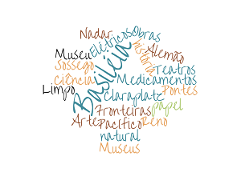

Basiléia

Introdução |
Localização |
Multimédia |
Informações |
Home
Introdução
Basiléia é uma cidade conhecida por ser base de industrias químicas
e farmaceuticas mas sendo também rica em museus, galerias de arte, casas de opera e teatros.
Basiléia tem o rio Reno a passar no seu centro e carris por todo o lado do seu típico transporte
público o elétrico.
🌊🏊🛶🧜👙
É costume anual ir nadar ao rio por
1,8km.
É costume anual ir nadar ao rio por 1,8km.
O meu website:
-
- Introdução
- Fala de características gerais da cidade, assim como conta um pequena história de uma atividade típica. Têm também uma explicação geral das páginas do site, como uma wordcloud sobre a cidade.
-
- Localização
- Fala sobre a localização da cidade e contém algumas informações geográficas assim como um mapa mostrando a sua localização.
-
- Multimédia
- Contém imagens da cidade, um vídeo sobre a mesma e um poema que a relembra.
-
- Informações
- Contém informações demograficas e geográficas da cidade e o website da mesma.
